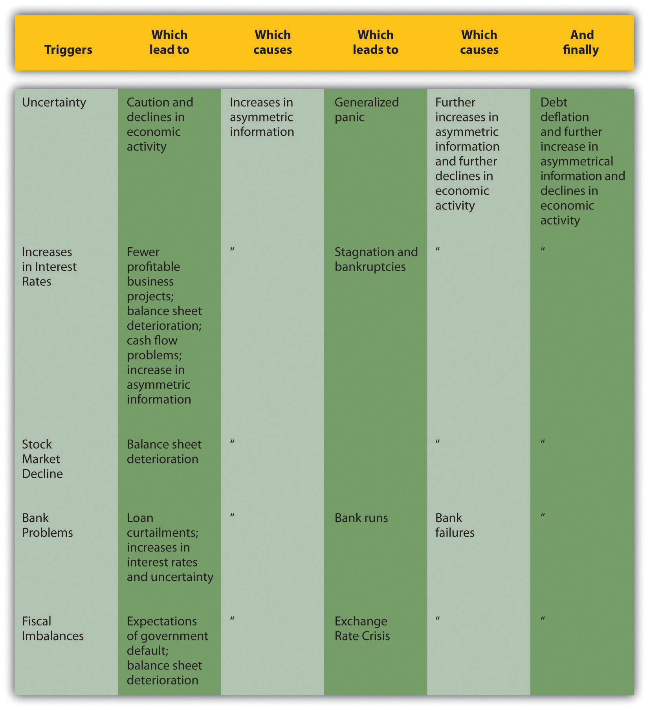
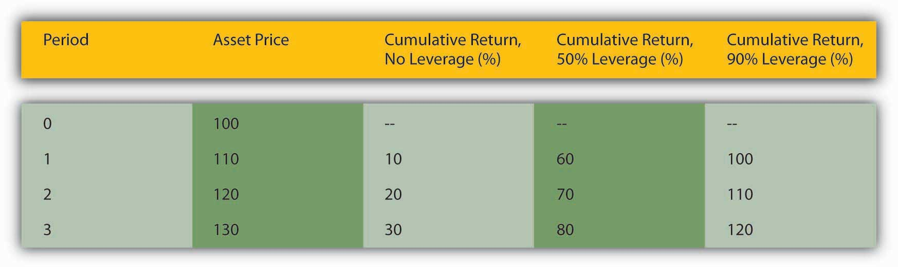

By the end of this chapter, students should be able to:
A financial crisisThe functioning of one or more financial markets or intermediaries becomes erratic or ceases altogether. occurs when one or more financial markets or intermediaries cease functioning or function only erratically and inefficiently. A nonsystemic crisisA particular market or intermediary functions erratically or inefficiently. involves only one or a few markets or sectors, like the Savings and Loan Crisis. A systemic crisisThe functioning of all, or nearly all, of the financial system degrades. involves all, or almost all, of the financial system to some extent, as during the Great Depression and the crisis of 2008.
Financial crises are neither new nor unusual. Thousands of crises, including the infamous Tulip Mania and South Sea Company episodes, have rocked financial systems throughout the world in the past five hundred years. Two such crises, in 1764–1768 and 1773, helped lead to the American Revolution.Tim Arango, “The Housing-Bubble and the American Revolution,” New York Times (29 November 2008), WK5. www.nytimes.com/2008/11/30/weekinreview/30arango .html?_r=2&pagewanted=1&ref=weekinreview After its independence, the United States suffered systemic crises in 1792, 1818–1819, 1837–1839, 1857, 1873, 1884, 1893–1895, 1907, 1929–1933, and 2008. Nonsystemic crises have been even more numerous and include the credit crunch of 1966, stock market crashes in 1973–1974 (when the Dow dropped from a 1,039 close on January 12, 1973, to a 788 close on December 5, 1973, to a 578 close on December 6, 1974) and 1987, the failure of Long-Term Capital Management in 1998, the dot-com troubles of 2000, the dramatic events following the terrorist attacks in 2001, and the subprime mortgage debacle of 2007. Sometimes, nonsystemic crises burn out or are brought under control before they spread to other parts of the financial system. Other times, as in 1929 and 2007, nonsystemic crises spread like a wildfire until they threaten to burn the entire system.
Financial crises can be classified in other ways as well. Some affect banks but not other parts of the financial system. Others mostly involve government debt and/or currency, as in bouts of inflation or rapid depreciation in foreign exchange markets. All types can spread to the other types and even to other nations via balance sheet deterioration and increases in asymmetric information. Five shocksIn economics, sudden, unexpected changes. Shocks usually have adverse consequences, but some can be salutary. The ones discussed here are all bad for the financial system and hence the economy., alone or in combination, have a strong propensity to initiate financial crises.
Increases in uncertainty. When companies cannot plan for the future and when investors feel they cannot estimate future corporate earnings or interest, inflation, or default rates, they tend to play it safe. They hold cash instead of investing in a new factory or equipment. That, of course, reduces aggregate economic activity.
Increases in interest rates. Higher interest rates make business projects less profitable and hence less likely to be completed, a direct blow to gross domestic product (GDP). Also, higher interest rates tend to exacerbate adverse selection by discouraging better borrowers but having little or no effect on the borrowing decisions of riskier companies and individuals. As a result, lenders are saddled with higher default rates in high interest-rate environments. So, contrary to what one would think, high rates reduce their desire to lend. To the extent that businesses own government or other bonds, higher interest rates decrease their net worth, leading to balance sheet deterioration, of which we will soon learn more. Finally, higher interest rates hurt cash flow (receipts minus expenditures), rendering firms more likely to default.
Government fiscal problems. Governments that expend more than they take in via taxes and other revenues have to borrow. The more they borrow, the harder it is for them to service their loans, raising fears of a default, which decreases the market price of their bonds. This hurts the balance sheets of firms that invest in government bonds and may lead to an exchange rate crisis as investors sell assets denominated in the local currency in a flight to safety. Precipitous declines in the value of local currency cause enormous difficulties for firms that have borrowed in foreign currencies, such as dollars, sterling, euro, or yen, because they have to pay more units of local currency than expected for each unit of foreign currency. Many are unable to do so and they default, increasing uncertainty and asymmetric information.
Balance sheet deterioration. Whenever a firm’s balance sheet deteriorates, which is to say, whenever its net worth falls because the value of its assets decreases and/or the value of its liabilities increases, or because stock market participants value the firm less highly, the Cerberus of asymmetric information rears its trio of ugly, fang-infested faces. The company now has less at stake, so it might engage in riskier activities, exacerbating adverse selection. As its net worth declines, moral hazard increases because it grows more likely to default on existing obligations, in turn because it has less at stake. Finally, agency problems become more prevalent as employee bonuses shrink and stock options become valueless. As employees begin to shirk, steal, and look for other work on company time, productivity plummets, and further declines in profitability cannot be far behind. The same negative cycle can also be jump-started by an unanticipated deflation, a decrease in the aggregate price level, because that will make the firm’s liabilities (debts) more onerous in real terms (i.e., adjusted for lower prices).
Banking problems and panics. If anything hurts banks’ balance sheets (like higher than expected default rates on loans they have made), banks will reduce their lending to avoid going bankrupt and/or incurring the wrath of regulators. As we have seen, banks are the most important source of external finance in most countries, so their decision to curtail will negatively affect the economy by reducing the flow of funds between investors and entrepreneurs. If bank balance sheets are hurt badly enough, some may fail. That may trigger the failure of yet more banks for two reasons. First, banks often owe each other considerable sums. If a big bank that owes much too many smaller banks were to fail, it could endanger the solvency of the creditor banks. Second, the failure of a few banks may induce the holders of banks’ monetary liabilities (today mostly deposits, but in the past, as we’ve seen, also bank notes) to run on the bank, to pull their funds out en masse because they can’t tell if their bank is a good one or not. The tragic thing about this is that, because all banks engage in fractional reserve banking (which is to say that no bank keeps enough cash on hand to meet all of its monetary liabilities), runs often become self-fulfilling prophecies, destroying even solvent institutions in a matter of days or even hours. Banking panics and the dead banks they leave in their wake cause uncertainty, higher interest rates, and balance sheet deterioration, all of which, as we’ve seen, hurt aggregate economic activity.
A downward spiral often ensues. Interest rate increases, stock market declines, uncertainty, balance sheet deterioration, and fiscal imbalances all tend to increase asymmetric information. That, in turn, causes economic activity to decline, triggering more crises, including bank panics and/or foreign exchange crises, which increase asymmetric information yet further. Economic activity again declines, perhaps triggering more crises or an unanticipated decline in the price level. That is the point, traditionally, where recessions turn into depressions, unusually long and steep economic downturns.
In early 1792, U.S. banks curtailed their lending. This caused a securities speculator and shyster by the name of William Duer to go bankrupt, owing large sums of money to hundreds of investors. The uncertainty caused by Duer’s sudden failure caused people to panic, inducing them to sell securities, even government bonds, for cash. By midsummer, though, the economy was again humming along nicely. In 1819, banks again curtailed lending, leading to a rash of mercantile failures. People again panicked, this time running on banks (but clutching their government bonds for dear life). Many banks failed and unemployment soared. Economic activity shrank, and it took years to recover. Why did the economy right itself quickly in 1792 but only slowly in 1819?
In 1792, America’s central bank (then the Secretary of the Treasury, Alexander Hamilton, working in conjunction with the Bank of the United States) acted as a lender of last resort. By adding liquidity to the economy, the central bank calmed fears, reduced uncertainty and asymmetric information, and kept interest rates from spiking and balance sheets from deteriorating further. In 1819, the central bank (with a new Treasury secretary and a new bank, the Second Bank of the United States) crawled under a rock, allowing the initial crisis to increase asymmetric information, reduce aggregate output, and ultimately cause an unexpected debt deflation. Since 1819, the United States has suffered from financial crises on numerous occasions. Sometimes they have ended quickly and quietly, as when Alan Greenspan stymied the stock market crash of 1987. Other times, like after the stock market crash of 1929, the economy did not fare well at all.www.amatecon.com/gd/gdcandc.html
Assuming their vital human capital and market infrastructure have not been destroyed by the depression, economies will eventually reverse themselves after many companies have gone bankrupt, the balance sheets of surviving firms improve, and uncertainty, asymmetric information, and interest rates decrease. It is better for everyone, however, if financial crises can be nipped in the bud before they turn ugly. This is one of the major functions of central banks like the European Central Bank (ECB) and the Fed. Generally, all that the central bank needs to do at the outset of a crisis is to restore confidence, reduce uncertainty, and keep interest rates in line by adding liquidity (cash) to the economy by acting as a lender of last resort, helping out banks and other financial intermediaries with loans and buying government bonds in the open market. Sometimes a bailout, a transfer of wealth from taxpayers to the financial system, becomes necessary. Figure 13.1 "Anatomy of a financial crisis and economic decline" summarizes this discussion of the ill consequences of financial shocks.
But in case you didn’t get the memo, nothing is ever really free. (Well, except for free goods.)en.wikipedia.org/wiki/Free_good When central banks stop financial panics, especially when they do so by bailing out failed companies, they risk creating moral hazard by teaching market participants that they will shield them from risks. That is why some economists, like Allan Meltzer, said “Let ’Em Fail,” in the op-ed pages of the Wall Street JournalJuly 21, 2007. online.wsj.com/article/SB118498744630073854.html when some hedge funds ran into trouble due to the unexpected deterioration of the subprime mortgage market in 2007. Hamilton’s Law (née Bagehot’s Law, which urges lenders of last resort to lend freely at a penalty rate on good security) is powerful precisely because it minimizes moral hazard by providing relief only to the more prudent and solvent firms while allowing the riskiest ones to go under.
Figure 13.1 Anatomy of a financial crisis and economic decline
Note: At any point the downward spiral can be stopped by adequate central bank intervention.
Source: Text.
“While we ridicule ancient superstition we have an implicit faith in the bubbles of banking, and yet it is difficult to discover a greater absurdity, in ascribing omnipotence to bulls, cats and onions, than for a man to carry about a thousand acres of land…in his pocket book.…This gross bubble is practiced every day, even upon the infidelity of avarice itself.…So we see wise and honest Americans, of the nineteenth century, embracing phantoms for realities, and running mad in schemes of refinement, tastes, pleasures, wealth and power, by the soul [sic] aid of this hocus pocus.”—Cause of, and Cure for, Hard Times.books.google.com/books When were these words penned? How do you know?
This was undoubtedly penned during one of the nineteenth century U.S. financial crises mentioned above. Note the negative tone, the allusion to Americans, and the reference to the nineteenth century. In fact, the pamphlet appeared in 1818. For a kick, compare/contrast it to blogs bemoaning the crisis that began in 2007:
http://cartledged.blogspot.com/2007/09/greedy-bastards-club.html
http://www.washingtonmonthly.com/archives/individual/2008_03/013339.php
http://thedefenestrators.blogspot.com/2008/10/death-to-bankers.html
Both systemic and nonsystemic crises damage the real economy by preventing the normal flow of credit from savers to entrepreneurs and other businesses and by making it more difficult or expensive to spread risks. Given the damage financial crises can cause, scholars and policymakers are keenly interested in their causes and consequences. You should be, too.
Asset bubblesThe price of some class of asset, like stocks or real estate, increases more rapidly than economic fundamentals. are increases in the value of some assets, like bonds, commodities (cotton, gold, oil, tulips), equities, or real estate, above their rational or fundamental level. Some combination of low interest rates, new technology, unprecedented increases in demand for the asset, and leverage typically create bubbles.
Low interest rates can cause bubbles by lowering the total cost of asset ownership. Recall that interest rates and bond prices are inversely related. Algebraically, the i term is in the denominator of the PV formula—PV = FV/(1 + i)n—so as it gets smaller, PV must get larger (holding FV constant, of course).
In colonial New York in the 1740s and 1750s, interest rates on mortgages were generally 8 percent. In the late 1750s and early 1760s, they fell to about 4 percent, and expected revenues from land ownership increased by about 50 percent. What happened to real estate prices? Why?
They rose significantly because it was cheaper to borrow money, thus lowering the total cost of real estate ownership, and because the land was expected to create higher revenues. Thinking of the land as a perpetuity and FV as the expected revenues arising from it:
And that is just the real estate effect. Increasing FV by £50 leads to the following:
In 1762, Benjamin Franklin reported that the “Rent of old Houses, and Value of Lands,…are trebled in the last Six Years.”For more on the crisis, see Tim Arango, “The Housing-Bubble Revolution,” New York Times (30 November 2008), WK 5. www.nytimes.com/2008/11/30 /weekinreview/30arango.html?_r=2&pagewanted=1&ref=weekinreview Unfortunately for the colonists, increases in FV proved transient, and interest rates soon soared past 8 percent.
The effect of new technology can be thought of as increasing FV, leading, of course, to a higher PV. Or, in the case of equities, low interest rates decrease k (required return) and new inventions increase g (constant growth rate) in the Gordon growth model—P = E × (1 + g)/(k – g)—both of which lead to a higher price. During bubbles, investors overestimate the likely effects of new technology and place unreasonably high estimates on FV and g.
Large increases in the demand for an asset occur for a variety of reasons. Demand can be increased merely by investors’ expectations of higher prices in the future, as in the one period valuation model—P = E/(1 + k) + P1/(1 + k). If many investors believe that P1 must be greater than P a year (or any other period) hence, demand for the asset will increase and the expectation of a higher P1 will be vindicated. That sometimes leads investors to believe that P2 will be higher than P1, leading to a self-fulfilling cycle that repeats through P3 to Px. At some point, the value of the asset becomes detached from fundamental reality, driven solely by expectations of yet higher future prices. In fact, some scholars verify the existence of an asset bubble when news about the price of an asset affects the economy, rather than the economy affecting the price of the asset.
To increase their returns, investors often employ leverage, or borrowing. Compare three investors, one who buys asset X entirely with his own money, one who borrows half of the price of asset X, and one who borrows 90 percent of the price of asset X. Their returns (not including the cost of borrowing, which as noted above is usually low during bubbles) will be equal to those calculated in Figure 13.2 "The effects of leverage on returns in a rising market".
Figure 13.2 The effects of leverage on returns in a rising market
The figures were calculated using the rate of return formula: R = (C + Pt1 – Pt0)/Pt0. Here, coupons are zero and hence drop out so that R = (Pt1 – Pt0)/Pt0.
In this example, returns for the unleveraged investor are great:
But the returns are not as high as the investor who borrowed half the cash, in essence paying only $50 of his own money for the $100 asset at the outset:
But even he looks like a chump compared to the investor who borrowed most of the money to finance the original purchase, putting up only $10 of his own money:
If you are thinking the most highly leveraged investor is the smart one, recall that a trade-off between risk and return exists before continuing.
A financial panicPanicked selling occurs during the rapid de-leveraging of the financial system following the bursting of an asset bubble. occurs when leveraged financial intermediaries and other investors must sell assets quickly in order to meet lenders’ callsA lender asks a borrower to repay, usually because interest rates have increased and/or the value of collateral has declined.. Lenders call loans, or ask for repayment, when interest rates increase and/or when the value of collateral pledged to repay the loan sinks below the amount the borrower owes. Calls are a normal part of everyday business, but during a panic, they all come en masse due to some shock, often the burstingWhen an asset bubble rapidly deflates, i.e., the price of the asset rapidly decreases. of an asset bubble. Bubbles, like people, are bound to die but nobody knows in advance when they will do so. A burst is sometimes triggered by an obvious shock, like a natural catastrophe or the failure of an important company, but sometimes something as seemingly innocuous as a large sell order can touch them off.
During a panic, almost everybody must sell and few can or want to buy, so prices plummet, triggering additional calls, and yet more selling. Invariably, some investors, usually the most highly leveraged ones, cannot sell assets quickly enough, or for a high enough price, to “meet the call” and repay their loans. Banks and other lenders begin to suffer defaults. Their lenders (other banks, depositors, holders of commercial paper), in turn, begin to wonder if they are still credit-worthy. Asymmetric information and uncertainty reign supreme, inducing lenders to restrict credit. At some point, investors’ emotions take over, and they literally go into a panic, one that makes Tony Soprano’s panic attacks seem like a stroll in the park.www.menshealth.com/health/when-panic-attacks
Panics often cause the rapid de-leveragingLenders force borrowers to invest more of their own equity in assets.of the financial system, a period when interest rates for riskier types of loans and securities increase and/or when a credit crunchThe volume of loans decreases dramatically, usually in response to the bursting of an asset bubble during a financial crisis., or a large decrease in the volume of lending, takes place. Such conditions often usher in a negative bubbleA bubble characterized by prices that are far below their rational value., a period when high interest rates, tight credit, and expectations of lower asset prices in the future cause asset values to trend downward, sometimes well below the values indicated by underlying economic fundamentals. During de-leveraging, the forces that drove asset prices up now conspire to drag them lower.
In New York in 1764, interest rates spiked from 6 to 12 percent and expected revenues from land plummeted by about 25 percent. What happened to real estate prices and why?
They dropped significantly because it was more expensive to borrow money, thus increasing the total cost of real estate ownership, and because the land was expected to yield lower revenues. Thinking of the land as a perpetuity and FV as the expected revenues arising from it:
And that is just the real estate effect. Decreasing FV by £25 leads to the following:
“I know of sundry Estates [farms and other landed property] that has been taken by Execution [foreclosed upon],” a New York merchant reported late in 1766, “and sold for not more than one third of their value owing to the scarcity of money.”
As shown in Figure 13.3 "The effects of leverage on returns in a falling market", the most highly leveraged investor suffers most of all.
Figure 13.3 The effects of leverage on returns in a falling market

Again, I used the rate of return formula, but coupons are zero so that R = (Pt1 – Pt0)/Pt0. As the price of the asset falls, the unleveraged investor suffers negative returns:
The leveraged investors lose the same percentage and must now pay a high interest rate for their loans, or put up the equity themselves, at a time when the opportunity cost of doing so is substantial:
The higher the leverage, the larger the sum that must be borrowed at high rates.
Also, the higher the leverage, the smaller the price change needs to be to trigger a call. At 50 percent leverage, a $100 asset could drop to $50 before the lender must call. At 90 percent leverage, a $100 asset need lose only $10 to induce a call.
As noted above, financial panics and the de-leveraging that often occur after them can wreak havoc on the real economy by decreasing the volume of loans, insurance contracts, and other beneficial financial products. That, in turn, can cause firms to reduce output and employment. Lenders of last resort try to stop panics and de-leveraging by adding liquidity to the financial system and/or attempting to restore investor confidence. They add liquidity by increasing the money supply, reducing interest rates, and making loans to worthy borrowers who find themselves shut off from their normal sources of external finance. They try to restore investor confidence by making upbeat statements about the overall health of the economy and/or financial system and by implementing policies that investors are likely to find beneficial. After a stock market crash in 1987, for example, the Federal Reserve stopped a panic merely by promising to loan liberally to temporarily strapped banks.
In a single day, October 19, 1987, the S&P fell by 20 percent. What caused such a rapid decline? Why did the panic not result in de-leveraging or recession?
According to a short history of the event by Mark Carlson (“A Brief History of the 1987 Stock Market Crash with a Discussion of the Federal Reserve Response”),www.federalreserve.gov/Pubs/feds/2007/200713/200713pap.pdf “During the years prior to the crash, equity markets had been posting strong gains.…There had been an influx of new investors.…Equities were also boosted by some favorable tax treatments given to the financing of corporate buyouts.…The macroeconomic outlook during the months leading up to the crash had become somewhat less certain.…Interest rates were rising globally.…A growing U.S. trade deficit and decline in the value of the dollar were leading to concerns about inflation and the need for higher interest rates in the United States as well.” On the day of the crash, investors learned that deficits were higher than expected and that the favorable tax rules might change. As prices dropped, “record margin calls” were made, fueling further selling. The panic did not proceed further because Federal Reserve Chairman Alan Greenspan restored confidence in the stock market by promising to make large loans to banks exposed to brokers hurt by the steep decline in stock prices. Specifically, the Fed made it known that “The Federal Reserve, consistent with its responsibilities as the Nation’s central bank, affirmed today its readiness to serve as a source of liquidity to support the economic and financial system.”
Lenders of last resort partially emulate three rules first promulgated by U.S. Treasury Secretary Alexander Hamilton (1789–1795) but popularized by Economist editor Walter Bagehot in his 1873 book Lombard Street. As Bagehot put it, during a banking panic an LLR should make loans:
at a very high rate of interest. This will operate as a heavy fine on unreasonable timidity, and will prevent the greatest number of applications by persons who do not require it. The rate should be raised early in the panic, so that the fine may be paid early; that no one may borrow out of idle precaution without paying well for it; that the Banking reserve may be protected as far as possible. Secondly. That at this rate these advances should be made on all good banking securities, and as largely as the public ask for them. The reason is plain. The object is to stay alarm, and nothing therefore should be done to cause alarm. But the way to cause alarm is to refuse some one who has good security to offer…No advances indeed need be made by which the Bank will ultimately lose. The amount of bad business in commercial countries is an infinitesimally small fraction of the whole business…The great majority, the majority to be protected, are the ‘sound’ people, the people who have good security to offer. If it is known that the Bank of England [the LLR in Bagehot’s time and country] is freely advancing on what in ordinary times is reckoned a good security—on what is then commonly pledged and easily convertible—the alarm of the solvent merchants and bankers will be stayed. But if securities, really good and usually convertible, are refused by the Bank, the alarm will not abate, the other loans made will fail in obtaining their end, and the panic will become worse and worse.
This is usually translated as LLRs lending freely on good security at a penalty rate. Today, central banks acting as LLR usually lend freely on good collateral but only to banks, not the public. Moreover, they typically reduce interest rates in order to stimulate the economy. The unfortunate result of the latter change is to increase moral hazard, or risk taking on the part of banks that “bank on” cheap loans from the LLR should they run into difficulties.
The most common form of lender of last resort today is the government central bank, like the European Central Bank (ECB) or the Federal Reserve. The International Monetary Fund (IMF) sometimes tries to act as a sort of international lender of last resort, but it has been largely unsuccessful in that role. In the past, wealthy individuals like J. P. Morgan and private entities like bank clearinghouses tried to act as lenders of last resort, with mixed success. Most individuals did not have enough wealth or influence to thwart a panic, and bank clearinghouses were at most regional in nature.
As noted above, lenders of last resort provide liquidity, loans, and confidence. They make loans to solvent institutions facing temporary solvency problems due to the crisis, not inevitable bankruptcy.Doug Arner, Financial Stability, Economic Growth, and the Role of Law (New York: Cambridge University Press, 2007), 139–140. BailoutsWhen taxpayer money is used to restore losses suffered by economic agents., by contrast, restore the losses suffered by one or more economic agents, usually with taxpayer money. The restoration can come in the form of outright grants or the purchase of equity but often takes the form of subsidized or government-guaranteed loans. Unsurprisingly, bailouts are often politically controversial because they can appear to be unfair and because they increase moral hazard, or risk-taking on the part of entities that expect to be bailed out if they encounter difficulties. Nevertheless, if the lender of last resort cannot stop the formation of a negative bubble or massive de-leveraging, bailouts can be an effective way of mitigating further declines in economic activity.
During the Great Depression, for example, the federal government used $500 million of taxpayer money to capitalize the Reconstruction Finance Corporation (RFC). In its initial phase, the RFC made some $2 billion in low-interest loans to troubled banks, railroads, and other businesses. Though at first deprecated as welfare for the rich, the RFC, most observers now concede, helped the economy to recover by keeping important companies afloat. Also during the depression, the Home Owners Loan Corporation (HOLC), seeded with $200 million of taxpayer dollars, bailed out homeowners, many of whom had negative equityThe market price of an asset is less than the sum borrowed to acquire it. Also known as being “in the bucket” or “under water.” in their homes, by refinancing mortgages on terms favorable to the borrowers.
In a resolution, by contrast, a government agency, like the Federal Deposit Insurance Corporation (FDIC), disposes of a failed bank’s assets (one at a time or in bulk to an acquiring institution) and uses the proceeds to repay the bank’s creditors and owners according to their seniority, a predetermined order depending on their class (depositor, bondholder, stockholder). The line between resolutions and bailouts sometimes blurs. In the aftermath of the Savings and Loan Crisis, for example, the Resolution Trust Corporation (RTC) closed 747 thrifts with total assets of almost $400 billion. The RTC cost taxpayers only $125 billion while staving off a more severe systemic crisis.
The 1979 bailout of automaker Chrysler, which entailed a government guarantee of its debt, saved the troubled corporation from bankruptcy. It quickly paid off its debt, and the U.S. Treasury, and hence taxpayers, were actually the richer for it. Was this bailout successful?
At the time, many observers thought so. Chrysler creditors, who received 30 cents for every dollar the troubled automaker owed them, did not think so, however, arguing that they had been fleeced to protect Chrysler stockholders. Workers who lost their jobs or were forced to accept reductions in pay and benefits were also skeptical. Now that Chrysler and the other U.S. carmakers are again in serious financial trouble, some scholars are suggesting that the bailout was a disaster in the long term because it fooled Detroit execs into thinking they could continue business as usual. In retrospect, it may have been better to allow Chrysler to fail and a new, leaner, meaner company to emerge like a Phoenix from its ashes.
The most recent financial crisis began in 2007 as a nonsystemic crisis linked to subprime mortgagesLoans to risky borrowers collateralized with real estate, usually primary residences but sometimes vacation homes., or risky loans to homeowners. In 2008, the failure of several major financial services companies turned it into the most severe systemic crisis in the United States since the Great Depression.
The troubles began with a major housing asset bubble. As shown in Figure 13.4 "Case-Shiller U.S. Home Price Composite Index, 2000–2010", between January 2000 and 2006, a major index of housing prices in the United States more than doubled. (Prices went up more in some areas than in others because real estate is a local asset.) Home prices rose rapidly for several reasons. As shown in Figure 13.5 "U.S. interest rates, 2000–2010", mortgage rates were quite low, to a large extent because the Federal Reserve kept the federal funds rate, the rate at which banks lend to each other overnight, very low.
Figure 13.4 Case-Shiller U.S. Home Price Composite Index, 2000–2010

Figure 13.5 U.S. interest rates, 2000–2010

Mortgages also became much easier to obtain. Traditionally, mortgage lenders held mortgage loans on their own balance sheets. If a homeowner defaulted, the lender, usually a bank or life insurance company, suffered the loss. They were therefore understandably cautious about whom they lent to and on what terms. To shield themselves from loss, lenders insisted that borrowers contribute a substantial percentage of the home’s value as a down payment. The down payment ensured that the borrower had some equity at stake, some reason to work hard and not to default. It also provided lenders with a buffer if housing prices declined. Traditionally, lenders also verified that borrowers were employed or had other means of income from investments or other sources.
All that changed with the widespread advent of securitization, the practice of bundling and selling mortgages to institutional investors. Banks also began to “financial engineerA person who engages in financial engineering, the process of creating new, hopefully improved, financial products by redesigning or repackaging existing financial instruments.” those bundles, called mortgage-backed securitiesA bundle of home mortgages. (MBSs), into more complex derivative instruments like collateralized mortgage obligationsA type of derivative formed by financial engineering mortgage-backed securities into tranches with different risk-return characteristics. (CMOs). MBSs afforded investors the portfolio diversification benefits of holding a large number of mortgages; CMOs allowed investors to pick the risk-return profile they desired. They did so by slicing a group of MBSs into derivative securities (aka tranchesFrench for “slice.” Part of a structured finance instrument such as a collateralized mortgage obligation.) with credit ratings ranging from AAA, which would be the last to suffer losses, to BBB, which would suffer from the first defaults. The AAA tranches, of course, enjoyed a higher price (lower yield) than the lower-rated tranches. The holders of the lowest-rated tranches, those who took on the most risks, suffered most during the subprime maelstrom.
Securitization allowed mortgage lenders to specialize in making loans, turning them more into originators than lenders. Origination was much easier than lending because it required little or no capital. Unsurprisingly, a large number of new mortgage originators, most mere brokers, appeared on the scene. Paid a commission at closing, originators had little incentive to screen good borrowers from bad and much more incentive to sign up anyone with a pulse. A race to the bottom occurred as originators competed for business by reducing screening and other credit standards. At the height of the bubble, loans to no income, no job or assets (NINJA) borrowers were common. So-called liars’ loans for hundreds of thousands of dollars were made to borrowers without documenting their income or assets. Instead of insisting on a substantial down payment, many originators cajoled homeowners into borrowing 125 percent of the value of the home because it increased their commissions. They also aggressively pushed adjustable rate mortgages (ARMs) that offered low initial teaser rates and later were reset at much higher levels.
Regulators allowed, and even condoned, such practices in the name of affordable housing, even though six earlier U.S. mortgage securitization schemes had ended badly.Kenneth Snowden, “Mortgage Securitization in the United States: Twentieth Century Developments in Historical Perspective,” in Michael Bordo and Richard Sylla, eds., Anglo-American Financial Systems: Institutions and Markets in the Twentieth Century (Burr Ridge, IL: Irwin Professional Publishing, 1995), 261–298. Regulators also allowed Fannie Mae and Freddie Mac, two giant stockholder-owned mortgage securitization companies whose debt was effectively guaranteed by the federal government, to take on excessive risks and leverage themselves to the hilt. They also allowed credit-rating agencies to give investment-grade ratings to complicated mortgage-backed securities of dubious quality.
Observers, including Yale’s Robert Shillerwww.econ.yale.edu/~shiller and Stern’s Nouriel Roubini,pages.stern.nyu.edu/~nroubini warned about the impending crisis, but few listened. As long as housing prices kept rising, shoddy underwriting, weak regulatory oversight, and overrated securities were not problems because borrowers who got into trouble could easily refinance or sell the house for a profit. Indeed, many people began to purchase houses with the intention of “flipping” them a month later for a quick buck.
In June 2006, however, housing prices peaked, and by the end of that year it was clear that the bubble had gone bye-bye. By summer 2007, prices were falling quickly. Defaults mounted as the sale/refinance option disappeared, and borrowers wondered why they should continue paying a $300,000 mortgage on a house worth only $250,000, especially at a time when a nasty increase in fuel costs and a minor bout of inflation strained personal budgets. Highly leveraged subprime mortgage lenders, like Countrywide and Indymac, suffered large enough losses to erode their narrow base of equity capital, necessitating their bankruptcy or sale to stronger entities. By early 2008, investment bank Bear Stearns, which was deeply involved in subprime securitization products, teetered on the edge of bankruptcy before being purchased by J. P. Morgan for a mere $10 per share.
Figure 13.6 Delinquency rate on residential mortgages, 2000–2011

Shaded areas indicate U.S. recessions.
Source: Board of Governors of the Federal Reserve System. 2011 research.stlouisfed.org.
As the crisis worsened, becoming more systemic in nature as asymmetric information intensified, the Federal Reserve responded as a lender of last resort by cutting its federal funds target from about 5 to less than 2 percent between August 2007 and August 2008. It also made massive loans directly to distressed financial institutions. Mortgage rates decreased from a high of 6.7 percent in July 2007 to 5.76 percent in January 2008, but later rebounded to almost 6.5 percent in August 2008. Moreover, housing prices continued to slide, from an index score of 216 in July 2007 to just 178 a year later. Defaults on subprime mortgages continued to climb, endangering the solvency of other highly leveraged financial institutions, including Fannie Mae and Freddie Mac, which the government had to nationalize (take over and run). The government also arranged for the purchase of Merrill Lynch by Bank of America for $50 billion in stock. But it decided, probably due to criticism that its actions were creating moral hazard, to allow Lehman Brothers to go bankrupt. That policy quickly backfired, however, because Lehman dragged one of its major counterparties, AIG, down with it. Once bitten, twice shy, the government stepped in with a massive bailout for AIG to keep it from bankrupting yet other large institutions as it toppled.
Figure 13.7 Daily closing value of the Dow Jones Industrial Average, September–October 2008

Figure 13.8 Bond yields, September–October 2008

The damage, however, had been done and panic overtook both the credit and stock markets in September and October 2008. With each passing day, asymmetric information grew more intense. With Treasury bonds the only clear safe haven, investors fled other markets thereby causing significant disruptions and failures. The entire asset-backed commercial paper market shut down, money market withdrawals soared after one of the largest of those staid institutions reported losses (“broke the buck,” a very rare event indeed), and mortgage and bond insurers dropped like flies hit with a can of Raid. Figure 13.7 "Daily closing value of the Dow Jones Industrial Average, September–October 2008" and Figure 13.8 "Bond yields, September–October 2008" graphically portray the resulting carnage in the stock and bond markets.
What is happening in Figure 13.8 "Bond yields, September–October 2008"?
Investors sold corporate bonds, especially the riskier Baa ones, forcing their prices down and yields up. In a classic flight to quality, they bought Treasuries, especially short-dated ones, the yields of which dropped from 1.69 percent on September 1 to .03 percent on the September 17.
With an economic recession and major elections looming, politicians worked feverishly to develop a bailout plan. The Bush administration’s plan, which offered some $700 billion to large financial institutions, initially met defeat in the House of Representatives. After various amendments, including the addition of a large sum of pork barrel sweeteners, the bill passed the Senate and the House. The plan empowered the Treasury to purchase distressed assets and to inject capital directly into banks. Combined with the $300 billion Hope for Homeowners plan, a bailout for some distressed subprime borrowers, and the direct bailout of AIG, the government’s bailout effort became the largest, in percentage of GDP terms, since the Great Depression. The Treasury later decided that buying so-called toxic assets, assets of uncertain and possibly no value, was not economically or politically prudent. Instead, it purchased preferred shares in most major banks, even those that did not desire any assistance. That raised fear of government ownership of banks, which has a dubious history because many governments have found the temptation to direct loans to political favorites, instead of the best borrowers, irresistible.“Leaving Las Vegas: No Dire Mistakes so Far, but Governments Will Find Exiting Banks Far Harder Than Entering Them,” The Economist (22 November 2008), 22.
Economists and policymakers are now busy trying to prevent a repeat performance, or at least mitigate the scale of the next bubble. One approach is to educate people about bubbles in the hope that they will be more cautious investors. Another is to encourage bank regulators to use their powers to keep leverage to a minimum. A third approach is to use monetary policy—higher interest rates or tighter money supply growth—to deflate bubbles before they grow large enough to endanger the entire financial system. Each approach has its strengths and weaknesses. Education might make investors afraid to take on any risk. Tighter regulation and monetary policy might squelch legitimate, wealth-creating industries and sectors. A combination of better education, more watchful regulators, and less accommodative monetary policy may serve us best.
Dodd-Frank, a regulatory reform passed in July 2010 in direct response to the crisis, may be a step in that direction, but critics note that the legislation is complex, unwieldy, and “does not incorporate a clear or consistent approach to the problem of regulating the financial sector.”Viral Acharya, Thomas Cooley, Matthew Richardson, and Ingo Walter, Regulating Wall Street: The Dodd-Frank Act and the New Architecture of Global Finance (Hoboken: John Wiley and Sons, 2011), 45. Like other regulations passed in the wake of panics, it may stop an exact repeat of the 2008 crisis but probably will not prevent a different set of institutions, instruments, derivatives, and bubbles from causing another crisis in the future. Instead of creating new approaches to regulation, like a proposed tax on banks that pose systemic risks, the Dodd-Frank Act establishes new tools like resolution plansSo-called “living wills” that banks have to create under Federal Reserve supervision that, it is hoped, will enable regulators like the FDIC to more easily, quickly, and cheaply wind down the affairs of impaired or failed banks. as well as new agencies like the Financial Stability Oversight Council, which is charged with monitoring and reducing systemic risk. The act also simultaneously increases and decreases the powers of others, including the Federal Reserve, which must now enforce stiffer capital, liquidity, leverage, and risk management requirements.
Acharya, Viral, Thomas Cooley, Matthew Richardson, and Ingo Walter. Regulating Wall Street: The Dodd-Frank Act and the New Architecture of Global Finance. Hoboken, NJ: John Wiley and Sons, 2011.
Ben-Shahard, Danny, Charles Ka Yui Leung, and Seow Eng Ong. Mortgage Markets Worldwide. Hoboken, NJ: John Wiley and Sons, 2007.
Kindleberger, Charles, and Robert Aliber. Manias, Panics, and Crashes: A History of Financial Crises, 5th ed. Hoboken, NJ: John Wiley and Sons, 2005.
Mishkin, Frederic. “How Should We Respond to Asset Price Bubbles?” in Banque de France, Financial Stability Review. October 2008, 65–74.
Reinhart, Carmen, and Kenneth Rogoff. This Time Is Different: Eight Centuries of Financial Folly. Princeton: Princeton University Press, 2009.
Roubini, Nouriel, and Brad Stetser. Bailouts or Bail-ins: Responding to Financial Crises in Emerging Markets. New York: Peterson Institute, 2004.
Shiller, Robert. Irrational Exuberance. New York: Doubleday, 2006.
The Subprime Solution: How Today’s Global Financial Crisis Happened, and What to Do About It. Princeton, NJ: Princeton University Press, 2008.
Sprague, Irvine. Bailout: An Insider’s Account of Bank Failures and Rescues. New York: Beard Books, 2000.
Wright, Robert E., ed. Bailouts: Public Money, Private Profit. New York: Columbia University Press, 2010.